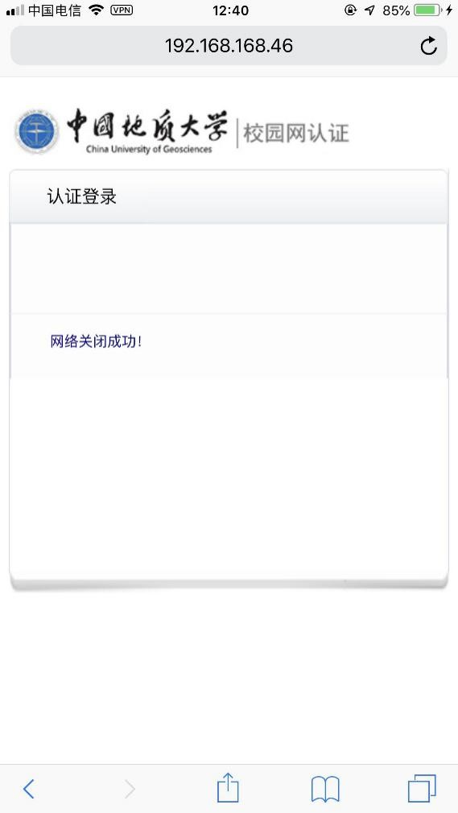

校园网使用手册
目录
- 简介 1
- 校园网发展 1
- 校园网服务应用 1
- 校园网用户指南 2
- 1.1 开户 2
- 1.2 登陆上网 5
- 1.3 关闭网络 7
- 1.4 账户管理 9
- 1.4.1 绑定 9
- 1.4.2 解绑 10
- 1.4.3 密码修改 11
- 1.4.4 充值 14
- 1.4.5 信息查询 18
- 1.5 共享网络 24
- 1.6 销户/转套餐 28
- 网络服务咨询与故障报修 30
- 校园网资费简介 31
- 文明上网行为准则 32
- 个人安全上网行为准则 3
简介
本手册介绍了校园网的基本情况，并提供了校园网基本上网操作的使用说明。
-
校园网发展 1994年加入中国教育与科研计算机网络 1995年10月30日成立校园计算机网络中心 1998年校园网实现千兆主干网百兆到桌面 1999年学校提出建设“数字地大”工程，为学校信息化有序发展创造了有利环境 2007年服务器虚拟化 2009年网络虚拟化 2011年桌面虚拟化 2013年提出“智慧地大”建设 2015年全面的WiFi 802.1 1ac校园覆盖 2016年SDN融入校园网
-
校园网服务应用 我校校园网主要承担广大师生的网络接入服务，以及学校的教学、科研、办公、日常生活和沟通等网络支持服务。目前校园网支持的服务和业务应用有: 校园一卡通、多媒体录播课堂、教务系统、学工系统、校医院的医疗系统、研究生信息管理系统、高性能计算平台、学校私有云存储平台、学校OA系统、财务系统、水电节能监控平台、各单位部门以及科研机构的网站等。
校园网用户指南
- 1.1 开户
方法一：
在浏览器中打开zizhu.cug.edu.cn 校园网自助服务平台
点击网络开户
进行身份验证
输入身份证后六位
选择合适的套餐
请注意，如果您需要办理联通、移动等运营商的校园网套餐，在完成套餐的交易后，您还需要在校园网自助服务平台上进行如下步骤的操作：
首先请选择您要绑定的运营商。并输入运营商提供的帐号密码。
绑定完毕后即可生效。如果您需要修改您的运营商绑定信息，点击主页中的”修改绑定信息“即可进行绑定信息的修改操作。
方法二：
在微信搜索并关注 地大校园网 公众号
进入公众号，选择账号管理菜单里的网络开户，后续步骤与方法一一致。
- 1.2 登陆上网
在浏览器中访问nap.cug.edu.cn
少数情况下，由于DNS服务器无法正确响应请求，可能无法打开这一域名。
这时候请直接在浏览器中输入 IP地址 192.168.168.42 访问登录授权页面
输入学号和密码登录，选择所需要的网络即可。
由于网络存在一定延时，登录后不一定能马上上网。请稍作等待。如果您在点击使用的网络时出现故障，请根据故障提示作出对应的操作。如果该故障重复出现，建议您重新启动您的上网设备。
登录上网后如果您发现存在有部分校外网站无法打开，那么可能是DNS服务器存在问题。请把您设备的DNS地址修改为 223.5.5.5 和 223.6.6.6 关于如何修改DNS地址，这因您使用的上网设备而异，建议您通过搜索引擎寻找方法。
- 1.3 关闭网络
在浏览器打开192.168.168.46
点击关闭网络即可

-
1.4 账户管理
-
1.4.1 绑定
进入 地大校园网 公众号，选择账号管理菜单中的账号绑定
- 1.4.1 解绑
进入地大校园网公众号，直接发送“解绑”。
- 1.4.3 密码修改
方法一：
登录 zizhu.cug.edu.cn 校园网自助服务平台

在首页选择修改密码
设置新密码
方法二：
进入地大校园网公众号，选择小程序菜单

选择更改密码进行操作。
- 1.4.4 充值
方法一：
登录zizhu.cug.edu.cn 校园网自助服务平台
选择网费充值
请注意，网费充值时，系统将自动填入您自己的一卡通帐号。
如果您想要使用他人的一卡通进行充值缴费，请重新填入对应的一卡通帐号密码。
方法二：
进入地大校园网公众号，选择小程序菜单
选择网费充值，之后步骤同上。
方法三：
进入地大校园网公众号，选择账号管理菜单中的充值缴费。
- 1.4.5 信息查询
方法一：
登录zizhu.cug.edu.cn 校园网自助服务平台。

可以查询在线设备、注册设备、上网明细、充值详情、账号等信息，可以进行连接数修改、网费充值、密码修改、共享网络等操作。详细操作如下：
在线设备查询
点击在线设备查询后显示如上界面。您可以查看IP, MAC地址等相关信息。同时，您可以点击“设备描述”一栏，更改您的设备描述。这将有助于您辨识当前在线设备是否是您自己的设备，以防帐号被他人冒用。
在这一栏目中，您还可以点击“强制下线”将这一设备从校园网中下线。点击“切换信道”可以更方便地更改您的设备信道。
设备注册

注册新设备功能可以让您注册不需要登录Portal页面即可上网，但过程相对复杂。
首先您需要获取您设备的MAC地址。在局域网中，MAC地址唯一识别一台设备，关于如何获取MAC地址，因设备和操作系统而不一样。如果您不了解如何获取您设备的MAC地址，建议您阅读您设备的相关说明或使用互联网搜索引擎查找相关信息。
获取MAC地址后根据提示填入MAC地址，设备描述，选择好注册信道后点击“注册”按钮即可。
在已注册设备页面，您可以看到当前已经注册的设备，同时也可以进行解除注册的操作。
连接数修改
该功能能够帮助您修改当前您校园网内可连接的设备数量上限。当当前在校园网内的设备在线数量超过设定值时，最早上线的设备将会被系统踢下线。
您最多可以把最大连接数修改为3.
查看上网明细
在上网明细中，您可以查看您本月日流量使用情况的日曲线图和各日不同时段的流量使用直方图。
方法二：
进入地大校园网公众号，选择小程序菜单，进行与方法一所述的操作或者直接选择信息查询菜单查询信息。小程序中相关查询操作与网页版中完全相同。
- 1.5 共享网络
如果想与朋友共享网络，登录zizhu.cug.edu.cn 校园网自助服务平台，点击访客共享
选择上网信道（电信网/教育网），设置上网时间（15min—24h），生成共享码

朋友在浏览器打开zizhu.cug.edu.cn 校园网自助服务平台，选择访客登录
同时也可以通过扫码方式共享。在设备未登录校园网的情况下，点击上图的扫码登录，显示如下界面：
这时需要在小程序中扫描二维码图示二维码
共享网络成功后小程序会提示相关信息
- 1.6 销户/转套餐
方法一：
在浏览器中访问https://zizhu.cug.edu.cn 校园网自助服务平台，在设置菜单中选择注销账户。
方法二：
进入地大校园网公众号，选择小程序菜单，选择设置中的注销账户。
如果需要转套餐，则只需把之前套餐的账户注销重新开户选择新套餐即可。
网络服务咨询与故障报修
- 您在使用校园网过程中遇到任何网络故障，您可以:
- 给地大校园网公众号留言问题，我们会在最短的时间内为您解决问题;
- 拨打网络中心服务电话( 027-67885175)申报网络故障或咨询校园网相关业务，电话端客服人员会为您提供服务和技术支持;如果电话端处理不了的，24小时内我们会上门为您服务;
- 带着您的设备(手机、Pad、笔记本电脑等)直接到网络中心一楼服务大厅或110室寻求技术人员的帮助;
- 加入校园网疑难问题解决QQ群向我们咨询。
校园网资费简介
文明上网行为准则
- 爱护校园网络设备，维护校园网络的正常运行，任何人不得损坏校园网络设备。
- 坚持文明上网，传播先进文化、塑造美好心灵、弘扬社会正气。传播有益于提高群体素质、推动社会和谐发展的信息，努力营造积极向上、和谐文明的网络舆论氛围。
- 坚决抵制与社会公德和中华民族优秀传统美德相背离的不良信息，自觉抵制网络低俗之风，净化网络环境; 不转载违法、 庸俗、格调低下的言论、图片、音视频信息， 积极营造网络文明新风。
- 不得利用校园网络设备侵犯国家、集体、个人的合法权益，不得从事与犯罪有关的活动，不得利用校园网络从互联网上翻阅和传播以下信息:
- 违反宪法、与国家法律相抵触的信息
- 煽动颠覆国家政权和推翻社会主义制度的信息(3)阴谋分离国家，破坏国家统一的信息
- 歪曲事实、散布谣言、妨碍社会安定、损坏国家机关利益的信息
- 挑动民族仇恨、民族歧视，破坏民族团结的信息
- 宣传封建迷信、色情、淫秽、暴力、赌博、凶杀、教唆别人犯罪的信息
个人安全上网行为准则
- 网络交友要警惕，注意区分网络与现实的区别，避免过分沉迷于网络。
- 不要在不信任的网站上留下任何个人真实信息(包括姓名、 年龄、身份证号码、 手机号码、银行卡等信息),或者把这些信息透露给其他网友。
- 在不了解对方的情况下应尽量避免和网友单独会面或参与各种联谊活动，以免被不法分子有机可乘，危及自身安全。
- 应在可信任的网络环境和交易平台进行网络购物或交易，事先对商品信息或交易情况进行核实，不轻易向对方付款或提供银行卡密码，警惕网络诈骗。
- 不要在不信任的网络上随意下载软件。不要贪图免费软件，如果实在需要，请到信任网站上下载或在下载后通过杀毒软件彻底检查，确保安全后方可安装使用。
- 不要轻易打开来路不明或陌生人的电子邮件的附件。尤其是带有诱惑内容的附件更不可随意打开。遇到这种邮件，应立即删除。
- 不要在公用计算机上留下个人信息、各种上网账号和银行账号，更不要在公用计算机上进行网络购物和交易。
- 了解常见的计算机网络常识，避免在没有使用https协议加密的网站上输入用户名密码等敏感信息。一般使用了https协议的加密网站在浏览器左上角都会出现绿色小锁的图标。